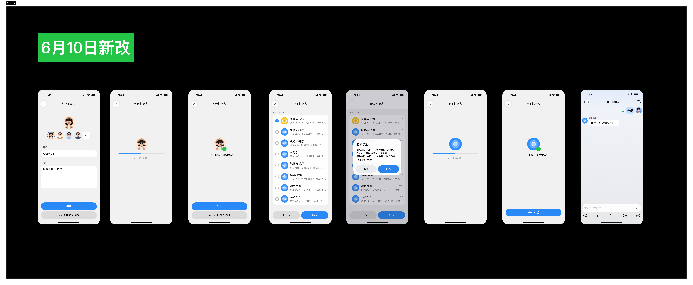

文档版本：V1.0
作者：青远(张振)
创建日期：2026-06-10
状态：待评审
1背景与价值
当前问题
POPO CLI 当前只能用用户本人的身份发消息。这带来三个问题：
- 用户呼声：AI coding 背景下，越来越多用户使用自己的 Agent 处理工作，CLI 用户群内多位用户反馈需要支持连接机器人的能力。
- 群内身份诉求：很多用户向群里发消息时希望使用机器人身份，而不是自己的身份，以免产生误会。
- 单向沟通：用户能让 Agent 发消息，但对方回复的消息回不到 Agent，无法形成"AI ↔ 人"的对话闭环。
解决方案
核心思路
让用户可以通过 CLI 扫码创建一个专属的 POPO 机器人，作为自己 Agent 的"代言人"。Agent 通过这个机器人对外发消息，对方的回复也能通过长连接实时推回 Agent，形成完整的双向对话能力。
用户价值
- ✅ 满足用户呼声：补齐 CLI 用户群反馈最多的"机器人能力"，让自己的 Agent 真正能用。
- ✅ 群内身份合规：用机器人身份发消息，避免被同事误以为是用户本人发言。
- ✅ 双向闭环：用户可以"回复机器人 / 群内 @机器人" → Agent 实时收到 → 继续执行任务。
- ✅ 低门槛：扫码一步创建，不需要去开发者后台手动配置。
2典型场景
场景 1 · 远程指挥（核心）
手机远程指挥电脑 Agent
出差或在外，开发同学用手机指挥电脑上的 Agent 写代码。Agent 遇到需要确认的事项（如"是否覆盖现有文件？"），通过机器人在 POPO 给主人发消息，主人手机回复 "yes"，Agent 收到后继续执行。
场景 2 · 主动通知
Agent 任务完成后主动播报
长任务（部署、跑数据、生成报告）完成后，Agent 通过机器人推送一条"任务已完成"消息，附带结果链接，让用户不必盯着终端等待。
场景 3 · 风险确认
高风险操作前的人工确认
Agent 准备执行高风险动作（删数据、上线、改配置）前，先通过机器人发"确认是否执行 X？"，等待用户回复确认后再继续，避免误操作。
场景 4 · 多 Agent 协作
多个 Agent 各自有独立机器人
用户为不同 Agent（比如"代码助手"、"运维助手"、"日报助手"）各自绑定一个机器人，消息来源一目了然，不会串台。
3能力总览
本期需要交付 3 个连贯的能力，共同构成"Agent 拥有专属机器人"的完整闭环：
① 一次性配置
② 发送消息（Agent 主动）
③ 接收回复（用户回机器人）
用户回机器人
→
POPO 长连接
→
Agent 收到回调
| 能力 | 名称 | 用户视角的价值 |
|---|
| 能力 1 |
扫码创建 / 绑定专属机器人 |
一次扫码即可新建或从已有机器人选择，不用懂"app_id / app_secret / 开发者后台"等技术概念。 |
| 能力 2 |
Agent 通过机器人发消息 |
Agent 用机器人身份给指定用户/群发消息，发送方显示为"机器人"，与用户身份解耦。 |
| 能力 3 |
用户回复实时推送给 Agent |
对方回复机器人的消息能实时推到 Agent，让 Agent 听得到"用户的反馈"，形成对话闭环。 |
4能力一 · 扫码创建机器人
核心逻辑
- 用户在终端内输入创建机器人的指令，终端展示一个二维码。
- 用户用 POPO 客户端扫码 → 进入机器人配置页 → 选择创建方式（新建机器人 或 从已有机器人选择） → 完成配置 → 自动跳转至机器人助手。
- 无论新建还是选已有，CLI 端都会自动完成"机器人 ↔ 当前 Agent"的绑定，整个流程用户无感。
💡 体验对齐已有能力：扫码后客户端的两条流程（新建 / 从已有选择）都完全复用 POPO 现有能力，仅需做少量文案改动；CLI 只负责"产出二维码"和"接收创建/绑定结果"。
客户端页面调整（仅文案，不重做）
| 调整项 | 原现状 | 本期要求 |
|---|
| 页面顶部文案 |
"创建 OpenClaw 机器人" |
改为"创建机器人" |
| 页面下方按钮 |
同时有"创建"和"绑定已有"两个按钮 |
改为"创建"和"从已有机器人选择"两个按钮 |
| 创建过程中的页面图片 |
展示龙虾形象 |
替换图片，不展示龙虾，沿用 UX 新稿 |
UX 视觉稿（新建 / 从已有选择 全流程）

扫码后客户端流程：① 创建（设置名称/简介） / 从已有机器人选择 → ② 配置/选择（含授权提示）→ ③ 完成 → 跳转机器人助手
关键约束
| 约束 | 说明 |
|---|
| 支持两种方式 |
用户可以选择新建机器人，也可以从自己已有的机器人列表中选择一个绑定到 Agent。两种方式都完整复用 POPO 现有能力。 |
| 支持多机器人 |
同一用户可以多次创建/绑定，拥有多个机器人，分别给不同 Agent / 不同任务用。Agent 调用时可对话式指定用哪个机器人（按机器人名称选择）。 |
| 归属绑定 |
机器人会绑定到扫码时所使用的 POPO 客户端用户名下（即"扫码人"为机器人创建者/绑定者，而非 CLI 当前登录用户）。 |
本期不做
解绑 / 删除机器人
本期暂不通过 CLI 提供解绑能力，机器人创建后由用户在 POPO 客户端管理。
CLI 内编辑机器人信息
机器人名称、头像、可使用范围等都在 POPO 客户端配置，CLI 不重复实现。
5能力二 · Agent 通过机器人发消息
用户体验
使用方式与"当前 CLI 已有的发消息能力"完全对齐，用户不需要学习新命令、新参数。差异只有一点：发送身份从"用户本人"变成"机器人"。
用户
让我的"代码助手机器人"给王五发条消息：今天的代码已合并到主干，请关注。
AGENT
已通过机器人「代码助手」给王五发送消息 ✅
机器人
（在王五的 POPO 收件箱）代码助手机器人：今天的代码已合并到主干，请关注。
需求范围
- 机器人发消息的消息内容能力支持文本、图片、文件，与当前 CLI 已支持的发消息能力保持一致。
- 消息发送方显示为机器人名称与头像，不显示用户本人身份。
- 同一用户名下有多个机器人时，Agent 可通过机器人名称选择用哪个发送。
权限校验
两道权限闸门
- ① 操作机器人的权限：只有本地登录 CLI 的用户本人能通过 CLI 操作自己创建的机器人，他人无法借用。
- ② 机器人可使用范围（接收方）：与 POPO 已有的「机器人可使用范围」机制打通——机器人只能给"在其可使用范围内"的用户/群发消息，发到范围外会被拒绝。
不需要做的
- 不需要单独设计"操作前二次确认"机制，登录态校验 + 范围校验已足够。
6能力三 · 用户回复实时回推 Agent
核心价值
这是从"单向通知"到"双向对话"的关键一步
没有这个能力，机器人只能发消息出去，用户的回复就石沉大海了。Agent 收不到反馈，就无法实现"远程指挥 / 风险确认"等核心场景。
用户体验
AGENT
（电脑上）准备删除 5 个测试文件，已通过机器人征求你的确认...
机器人
（POPO 推到主人手机）代码助手机器人：准备删除 5 个测试文件，确认请回 yes
AGENT
收到主人回复 "yes"，继续执行删除操作...
需求范围
- 触发事件（本期支持两类）：
- ① 用户在 POPO 中给机器人发消息（即"单聊回复机器人"）
- ② 用户在群里 @机器人 的消息
- 推送方式：复用机器人当前已具备的长连接能力，把回调消息实时推到 Agent，用户无需配置内网穿透或公网服务。
- 推送内容：使用机器人当前已具备的回调能力原样输出，本期不做额外裁剪和定制。
实现方案（与开发对齐）
- 用户在终端执行创建机器人指令时，CLI 自动将机器人 Webhook 写入当前安装 CLI 的 Agent 文件路径下。
- POPO 收到用户回复 / @机器人事件后，通过机器人已具备的长连接实时推送回调消息到该 Webhook 地址。
- Agent 直接从本地 Webhook 接收消息，不需要用户额外配置 Webhook URL、内网穿透或部署任何服务。
💡 对用户的好处：从用户视角看，扫码 → 创建机器人 → 立即可用，整个回调链路是"开箱即用"的，无需任何额外配置。
7端到端用户流程
首次创建（一次性）
1
在终端输入指令创建
用户在终端内输入创建机器人指令，CLI 在终端内弹出二维码；同时 CLI 自动将机器人 Webhook 写入本地 Agent 文件路径，为后续回调做好准备。
2
POPO 扫码 → 选择创建方式
用 POPO 客户端扫一扫，进入机器人配置页，选择"新建"或"从已有机器人选择"（沿用客户端已有体验，含名称 / 头像 / 可使用范围等设置）。
3
配置完成 → 自动绑定
客户端提示"配置成功"并跳转至机器人助手；CLI 端也自动完成绑定，告诉用户"机器人 [名称] 已可用"。
日常使用
A
Agent 发消息
用户对话式让 Agent 用某个机器人发消息 → Agent 通过 CLI 调用 → 机器人代发出。
B
用户回复机器人
接收方在 POPO 中正常回复机器人，不需要任何特殊操作。
C
Agent 收到回调，继续任务
回调消息通过长连接实时推到 Agent，Agent 根据用户回复决定下一步动作（继续 / 中止 / 改方向）。
8与"IM Skill 给机器人发消息"的关系
本 PRD 与之前提的 「IM Skill 支持给机器人发消息」 是互补关系，不是替代：
| 维度 | IM Skill 给机器人发消息 | 本 PRD（CLI 使用机器人） |
|---|
| 谁是消息发送方 |
用户本人（用 CLI 帮自己给机器人发消息） |
机器人（Agent 借机器人身份对外发消息） |
| 谁是消息接收方 |
机器人 |
普通用户 / 群 |
| 典型场景 |
"让 KM 小助手帮我搜一下 X" |
"远程指挥 Agent，让它通过机器人来问我 yes/no" |
| 是否需要回调 |
否（一次性请求-响应） |
是（双向对话闭环） |
📌 合在一起看：两个能力上线后，POPO CLI 在"AI ↔ 机器人 ↔ 人"三方之间形成完整的双向通信能力。
9验收标准
| # | 验收项 | 判定标准 |
|---|
| V1 |
扫码创建机器人 |
已登录用户在 CLI 触发后，能在 30 秒内完成扫码 → 创建 → 绑定全流程，CLI 端能感知到"机器人已可用"。 |
| V2 |
多机器人支持 |
同一用户可重复扫码创建 N 个机器人；Agent 能按名称选择用哪个发送。 |
| V3 |
机器人发消息 |
消息成功送达，接收方看到的发送方为机器人名称 + 头像；支持文本、图片、文件三种消息类型。 |
| V4 |
权限校验 |
非本地登录用户无法操作他人机器人；发送给"机器人可使用范围外"的对象时被拒绝并明确提示。 |
| V5 |
回调实时性 |
用户回复机器人后，Agent 应在秒级内收到回调消息（取决于长连接延迟）。 |
| V6 |
用户零额外配置 |
用户除"扫码"外不需要做任何额外配置（无 Webhook、无内网穿透、无开发者后台操作）。 |
10埋点事件
| # |
事件 |
关键参数 / 说明 |
| E1 |
机器人创建成功 |
参数：创建时间、用户、本机号 |
| E2 |
机器人发消息 |
走 Fabric 后台接口调用埋点链路，支持统计机器人发消息接口调用次数 |